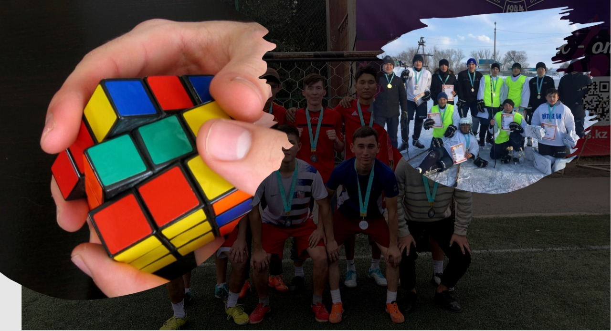

ХОББИ |
|
Аты: |
Қысқаша мәлемет |
Футбол |
Мен жас кезімнен бері футболға қатты қызығамын,кішкентайымнан футболға қатысып аудандық,облыстық жарыстардан орын алған болатынмың.Бірақ қазіргі таңда футбол жәәй хоббиыма айналды,Себебі оқуға көп көңіл бөліп кеттім.Жетістік |
Кубик-Рубик |
Кубик-рубик маған басымды қыздыруға басымның жақсы жұмыс істеуге көмектеседі сондықтан бос уақытымда кубик-рубик ойнап отырам.Үйрену |
Хоккей |
Хоккей мен тек қыста ойнайтынмың,солай хоккейге деген қызығушылық ашылып қаламның командасына барған болатынмын,өзімді жақсы жағымнан көрсетіп үлкен жарыстарға барған болатынбыз.Қазіргі таңда хоккейде жәй хоббиыма айналды.Жетістік |
Бұл мәлімет алынған сайт